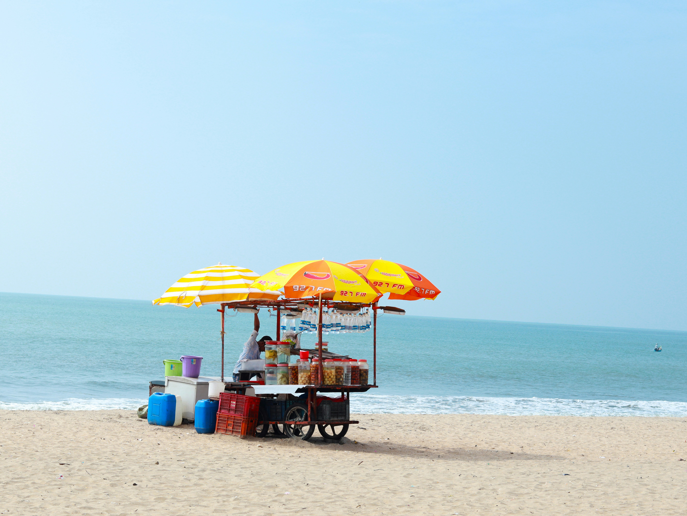
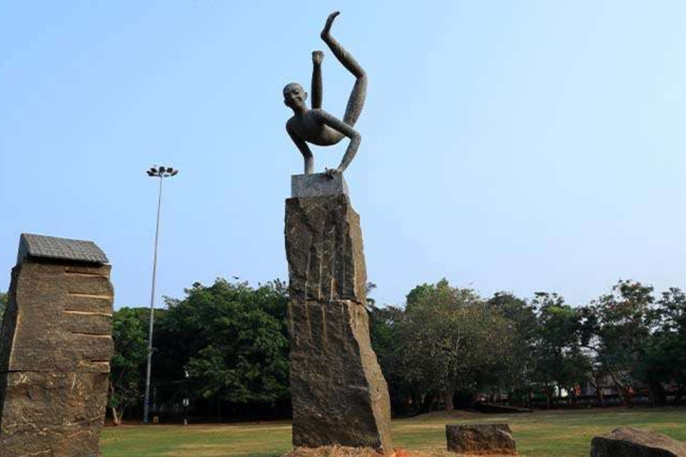
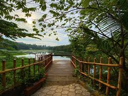
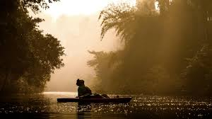
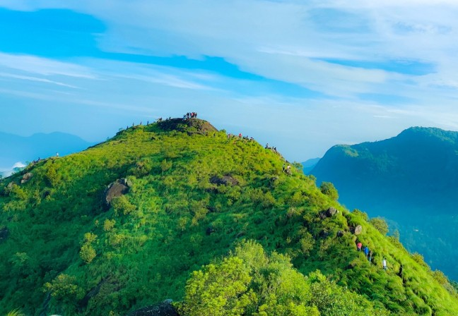
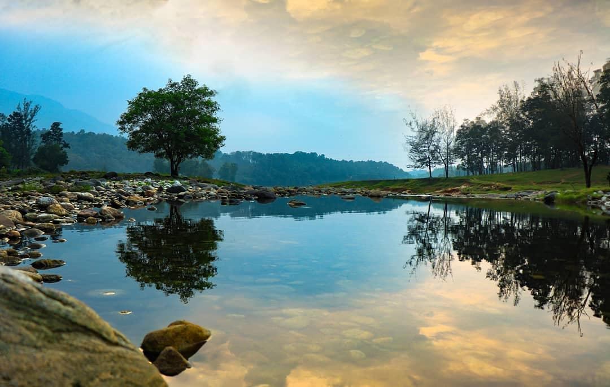
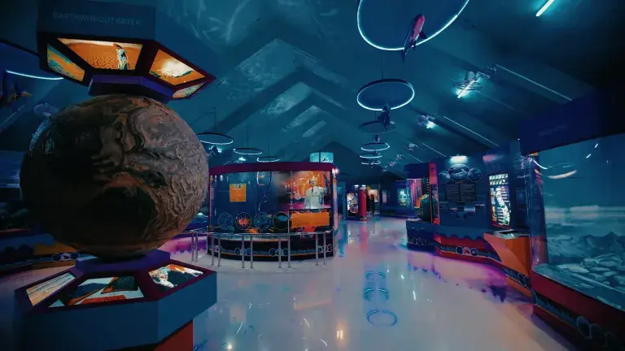
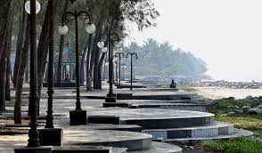

Kozhikode Beach

Kozhikode Beach is a historic, popular coastal destination on Kerala’s
Malabar Coast known for its scenic sunsets, golden sands, and vibrant local culture.
Located in the heart of the city, it features century-old piers, a lighthouse, and is
famous for seafood delicacies like kallumakkaya.
Get Location📍
Mananchira

A cultural and historical landmark featuring a man-made lake, traditional architecture,
and recreational spaces, reflecting the legacy of Kozhikode’s Zamorin era.
Get Location📍
Sarovaram Bio Park

Sarovaram Biopark in Kozhikode (Calicut) is a 200-acre eco-friendly urban park dedicated
to the conservation of wetlands and mangrove forests. It is a popular spot for nature
walks, birdwatching, and relaxing away from the city's bustle.
Get Location📍
Kadalundy

Kadalundi is a coastal village in the Kozhikode district of Kerala, India, primarily
famous for its Bird Sanctuary and Mangrove forests. It is home to India’s first riverfront
community reserve, the Kadalundi-Vallikkunnu Community Reserve (KVCR), which spans across
the Kadalundi and Vallikunnu villages.
Get Location📍
Kakkadampoyil

Kakkadampoyil is a serene hill station located about 48 km from Kozhikode city,
perched at an altitude of approximately 2,200 feet in the Western Ghats. Often
called the "Mini Gavi" of Malabar, it is popular for its misty climate, lush tea
plantations, and dense forests that offer a peaceful escape from urban life.
Get Location📍
Thonikkadavu

Thonikkadavu is a scenic ecotourism destination in the Kozhikode district, often
referred to as the "Ooty of Malabar" or the "Switzerland of Kerala" due to its lush green
meadows and misty landscape. Located near Kariyathumpara on the way to the Kakkayam Dam,
it is a popular spot for picnics and nature walks.
Get Location📍
Planetarium

The Regional Science Centre and Planetarium in Kozhikode (Calicut) is a premier
educational destination managed by the National Council of Science Museums. Located
near the New Bus Stand in Jaffer Khan Colony, it features a sophisticated 250-seater
dome planetarium equipped with a Carl Zeiss projection system that offers immersive
3D astronomical shows.
Get Location📍
Kappad Beach

Kappad Beach, locally known as Kappakadavu, is one of Kerala's most significant historical
landmarks and its only Blue Flag certified beach. Located about 16–20 km from Kozhikode city,
it is famously known as the site where Portuguese explorer Vasco da Gama landed on May 20, 1498,
marking the beginning of the sea route from Europe to India.
Get Location📍